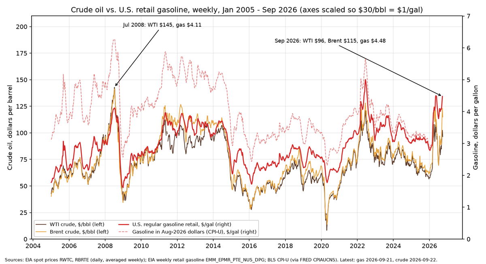
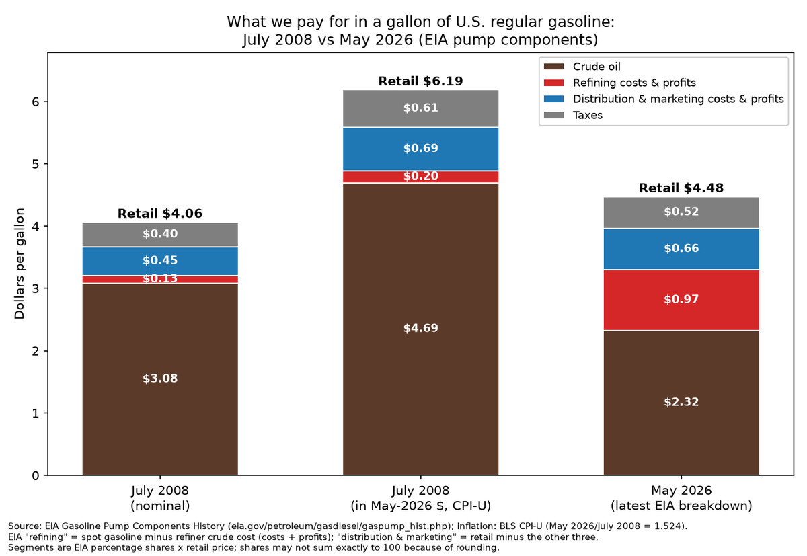
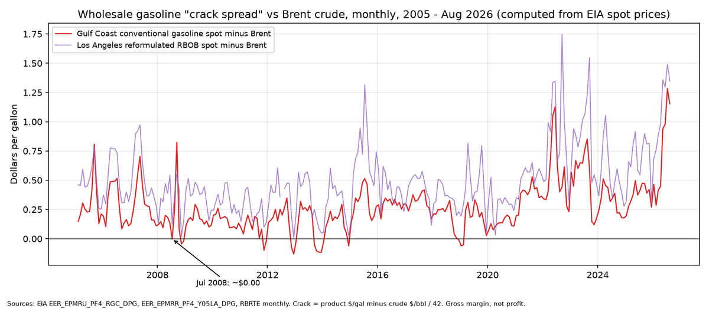
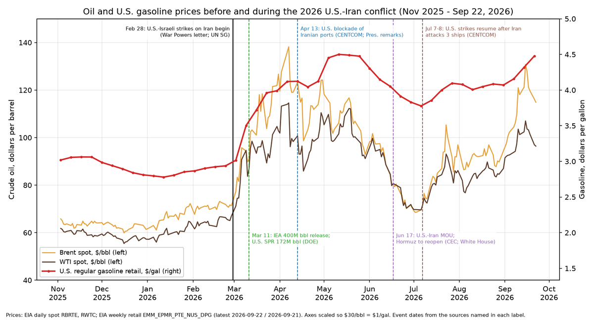

Watch
Energy: Gas Prices, Refiners and the Iran War
Why gas costs more than at the 2008 peak even with cheaper crude, where each dollar at the pump goes, and how the 2026 U.S.–Iran conflict moved prices, from EIA, BLS, SEC, Treasury, DOE and regulator records.
Checked Sep 24, 2026. Items that rest on news reports alone are in grey Reported-only boxes and are not counted.
✓ Verified by SwampForce means SwampForce checked the item against a primary record (government document, court filing, official results, or the person's or group's own words) on Sep 24, 2026.
Reported only items rest on news reports alone. They are kept in separate grey lists, are not stamped, and are not counted in any figure on this page.
Oil at $145 in 2008, gas at $4.11: why gas costs more today with crude much lower ✓ Verified by SwampForce
Nominal vs. real: is gas really more expensive?
- The national average for regular gasoline was $4.478/gal on Sep 21, 2026. The July 2008 peak was $4.114 (week of Jul 7, 2008). So today's pump price is about 36¢ higher in nominal dollars.
- Crude is much cheaper than in 2008. On Sep 22, 2026, WTI was $96.41 and Brent $114.89. The Jul 3, 2008 records were WTI $145.31 and Brent $143.95.
- Adjusted for inflation (BLS CPI-U), gas is cheaper today. The $4.114 of July 2008 equals about $6.27 in 2026 dollars, so today's $4.48 is roughly 28–29% lower in real terms. The $145 crude of 2008 equals about $221 today.
- In short, gas today costs more in nominal dollars than at the 2008 peak and about 29% less in real dollars.
- California has the strongest case for "more expensive today." Its 2008 weekly peak was $4.588 and the latest reading is $6.003, so it is $1.42 higher in nominal dollars. After inflation it is still below the 2008 peak, which equals about $6.99 in 2026 dollars.
- Washington ($5.516 vs $4.370) and the West Coast region ($5.600 vs $4.460) are also nominally higher. Texas ($3.929 vs $3.966) and the Gulf Coast ($3.972 vs $3.971) are no higher than in 2008 even in nominal dollars.

Where the extra money per gallon went
Change per gallon, July 2008 → May 2026 (cents)
EIA gasoline pump components; refining is the largest change
EIA's official "gasoline pump components" split each gallon into four parts. May 2026 is the latest month EIA has published. Comparing July 2008 ($4.062 monthly average) with May 2026 ($4.479):
| Piece of each gallon | Jul 2008 | May 2026 | Change |
|---|---|---|---|
| Crude oil | 307.9¢ | 232.5¢ | −75.4¢ |
| Refining costs & profits | 13.0¢ | 97.2¢ | +84.2¢ |
| Distribution & marketing (stations, trucking, retail margin) | 45.5¢ | 66.3¢ | +20.8¢ |
| Taxes | 39.8¢ | 51.5¢ | +11.7¢ |
| Pump price | $4.062 | $4.479 | +41.7¢ |
(Components are EIA percentages × EIA price, so rounding makes them differ from the total by up to 0.4¢.)
Refining explains all of the nominal gap by itself. Crude got 75¢ cheaper per gallon. Refiners' share grew by 84¢, which more than cancels that out. The distribution/station share and taxes each added a smaller amount.
Caveat: the crude slice EIA published for May 2026 implies about $97.6/bbl. EIA's current May 2026 refiner acquisition cost is $104.62, most likely revised after the components table was published. If the revised crude cost were used, the crude slice would be about 17¢ larger and the refining slice about 17¢ smaller. Refining would still be the largest increase.

Why the refining slice is so large now: five structural causes
- July 2008 was an unusual low for refiners. Their slice (3.2% of the pump price, 13¢) was lower than in all but 7 of the 317 months EIA has published (Jan 2000–May 2026). The Gulf Coast gasoline crack spread (the wholesale gasoline price minus the Brent price) was about zero, −0.2¢/gal, in July 2008. Valero, the largest independent refiner, lost $1.13 billion in 2008 (SEC filing). In 2008, crude was expensive and gasoline demand was falling, so refiners absorbed the squeeze.
- 2026 has a global shortage of refined products. The 2026 U.S.–Iran war cut Gulf crude and product exports. The IEA says Gulf product/LPG exports are down nearly 60%. Russian refineries have also been disrupted. The IEA reports record Atlantic Basin refining margins. The Gulf Coast gasoline crack averaged $1.15/gal in Aug 2026, compared with $0.16 for all of 2008 and $0.17 in 2019. The California Energy Commission calls it a "temporary crude-market disconnect": pump prices stay high while crude benchmarks fall, because the shortage is in products.
- The U.S. has less refining capacity than in 2020. Operable capacity peaked at 18.976 million b/d (Jan 2020). It was 18.027 million b/d in Jun 2026, about 950,000 b/d lower (−5%). EIA lists about 1.52 million b/d of refinery closures or conversions from 2020 to 2025, including Philadelphia Energy Solutions, Martinez, Belle Chasse, Rodeo, LyondellBasell Houston and Phillips 66 Los Angeles. Some capacity was added elsewhere, which partly offsets the closures. Valero idled Benicia (California) in April 2026. U.S. refineries are running flat out: utilization was 96.5% in Jun 2026 and 97.8% the week of Sep 4, compared with 88.8% in July 2008.
- The U.S. now exports a lot of refined product. Finished gasoline exports were 172,000 b/d in 2008 and 778,000 b/d in 2025. Total finished-product exports roughly doubled (1.61 → 3.05 million b/d). Domestic gasoline therefore competes with world prices, and the world is short. Gasoline inventories were 206.0 million barrels on Sep 18, 2026, the lowest for that week in every year from 2019 through 2026.
- Distribution and marketing costs are higher in nominal dollars (+21¢). In 2026 dollars, 2008's 45.5¢ equals 69.3¢, so this slice is about flat after inflation at 66.3¢.
- Taxes rose modestly, and all of the increase came from states. The federal gas tax has been 18.4¢ since 1993 and was never raised. The average state tax rose from about 20.5¢ (2008) to 33.8¢ (Jul 2026). California rose from 18¢ excise plus sales tax to 73.6¢ total state tax. After inflation, the total tax per gallon is lower now than in 2008 (60.6¢ in 2026 dollars then, vs 51.5¢ now).

Refiner profits (SEC filings)
Official filings show a large increase in refiner profits:
- Valero, Marathon Petroleum and Phillips 66 together reported $12.7 billion of net income in Q2 2026, compared with $2.8 billion in Q2 2025 (SEC 10-Qs).
- Valero's Q2 2026 refining operating income was $4.47B, up from $1.27B, and Valero says distillate margins drove most of it. Valero repurchased $2.8B of stock in the first half of 2026 and approved another $5.0B.
- Their 2022 results were also very high: $11–14.5B each.
- These are legal profits from wide margins. No regulator has found that they came from illegal conduct (see section 6).
"Rockets and feathers"
- The FTC documented in 2011 that retail gas prices rise faster than they fall ("rockets and feathers").
- 2026 has examples of both:
- Rising: from Feb 23 to Apr 6, 2026, pump prices rose $1.18 within six weeks of the war starting.
- Falling: after the June MOU, Brent fell from $98.29 (Jun 1) to $68.53 (Jul 2), which is −71¢ per gallon of crude. Over about the same period, gas fell from $4.305 (Jun 1) to $3.777 (Jul 6), or −53¢. That is roughly three-quarters passed through within five weeks.
- Rising again, more slowly: from Jul 6 to Sep 21, gas rose 70¢ while Brent rose $45.33/bbl ($69.56 → $114.89, ≈ $1.08/gal).
- Our reading: the pass-through asymmetry is real and documented. But in 2026 the pump price follows wholesale gasoline, not crude, and the wholesale gasoline margin is what widened.
- On Jul 3, 2026, the DOJ and FTC wrote to state attorneys general that "far too much of that price cut is being withheld" and that both agencies are "closely monitoring." That letter is a statement of concern and a call for state investigations. It is not a finding of illegal conduct.
Documented wrongdoing: official findings only ✓ Verified by SwampForce
- CFTC v. Optiver (futures manipulation, 2007): a federal court consent order dated Apr 19, 2012. It found that Optiver "banged the close" in NYMEX crude, heating oil and NY Harbor gasoline futures in March 2007, and imposed a $13M penalty plus $1M disgorgement. This conduct was small and short-lived, and it happened more than a year before the 2008 peak.
- California v. Vitol & SK (California spot gasoline, 2015): the California AG alleged that the two traders manipulated California spot gasoline prices after the Feb 2015 Torrance refinery explosion. The case settled for $50M on Jul 10, 2024 ($37.5M for consumers, $12.5M civil penalty). The allegations were settled, not proven at trial.
- FTC post-Katrina investigation (2006): found no evidence of illegal market manipulation. Fifteen firms met the statute's price-gouging definition, but the FTC found market and regional factors explained most of those cases.
- 2026: there is no official finding of gouging or manipulation so far.
- The DOJ/FTC are "monitoring."
- California's Division of Petroleum Market Oversight has an open enforcement inquiry into high-priced stations and has published no findings.
- The California Energy Commission never set a refiner-margin cap or penalty under the 2023 SB X1-2 "price gouging" law. On Aug 29, 2025 it voted to defer action for at least five years. As a result, there are zero SB X1-2 penalty findings.
Kept separate from the structural causes above. A settlement is not a finding of wrongdoing; the Vitol/SK case settled without proof at trial.
Bottom line
- Compared with the 2008 peak month, today's gallon has about 75¢ less crude in it.
- Refiners take about 84¢ more, stations and distribution about 21¢ more, and state taxes about 12¢ more.
- The refining increase comes from a real, documented global product shortage caused by the Iran war, on top of about 5% less U.S. refining capacity than in 2020 and heavy export demand. It is measured against an abnormally low 2008 refining margin.
- After inflation, gasoline is still well below its 2008 peak.
- Refiner profits are at or near records. No government body has found that 2026 prices involve illegal conduct.
Sources: EIA pump components ↗ · EIA method ↗ · EIA weekly retail price ↗ · BLS CPI-U ↗ · EIA refinery capacity ↗
Data tables and sources ✓ Verified by SwampForce
Prices, components, crack spreads, capacity, profits, taxes, exports and official investigations
A. Prices, nominal vs 2026 dollars
CPI-U (not seasonally adjusted, 1982–84=100):
- Jul 2008 = 219.964; May 2026 = 335.123; Aug 2026 = 334.980.
- Inflation factor Jul 2008 → Aug 2026 = 1.5229; Jul 2008 → May 2026 = 1.5235.
- Sources: BLS CUUR0000SA0 ↗ and FRED CPIAUCNS ↗. The FRED values match BLS.
| Measure | 2008 (nominal) | 2008 in 2026 $ | 2026 latest (nominal) | Source |
|---|---|---|---|---|
| US regular gasoline, weekly peak (Jul 7, 2008) vs latest (Sep 21, 2026) | $4.114 | $6.27 | $4.478 | EIA weekly ↗ |
| US regular gasoline, monthly avg Jul 2008 vs Aug 2026 | $4.062 | $6.19 | $4.058 | EIA monthly ↗ (monthly view of same series) |
| US regular gasoline, May 2026 monthly | — | — | $4.479 | same |
| All-time weekly record (Jun 13, 2022) | — | — | $5.006 | same |
| WTI spot record (Jul 3, 2008) vs Sep 22, 2026 | $145.31 | ≈$221 | $96.41 | EIA RWTC daily ↗ |
| Brent spot record (Jul 3, 2008) vs Sep 22, 2026 | $143.95 | ≈$219 | $114.89 | EIA RBRTE daily ↗ |
| WTI monthly avg Jul 2008 vs Aug 2026 | $133.37 | $203 | $83.90 | EIA RWTC |
| Brent monthly avg Jul 2008 vs Aug 2026 | $132.72 | $202 | $91.08 | EIA RBRTE |
| Refiner acquisition cost (composite), Jul 2008 vs May 2026 | $129.03 | — | $104.62 | EIA R0000____3 ↗ |
Brent traded as high as $130.80 on Sep 15, 2026. The Brent–WTI spread has been unusually wide in 2026, at about $18–24 on some days.
B. States and regions: 2008 weekly peak vs latest (Sep 21, 2026), regular gasoline $/gal (EIA weekly retail)
| Area | 2008 weekly peak | Latest | Nominal higher now? | 2008 peak in 2026 $ |
|---|---|---|---|---|
| California | 4.588 (wk of Jun 16) | 6.003 | Yes (+$1.42) | ≈6.99 |
| Washington | 4.370 | 5.516 | Yes | ≈6.66 |
| West Coast (PADD 5) | 4.460 | 5.600 | Yes | ≈6.79 |
| New York | 4.281 | 4.421 | Yes (+14¢) | ≈6.52 |
| Florida | 4.057 | 4.217 | Yes (+16¢) | ≈6.18 |
| Texas | 3.966 | 3.929 | No | ≈6.04 |
| Gulf Coast (PADD 3) | 3.971 | 3.972 | Flat | ≈6.05 |
- California's pre-war price was $4.441 (Feb 23, 2026).
- Series: California ↗. Other states and regions use the same EIA series family: EMM_EPMR_PTE_S(TX|FL|NY|WA)_DPG and _R30/_R50_DPG.
C. EIA gasoline pump components
- Source: EIA Gasoline Pump Components History ↗. Method: EIA methodology ↗.
- Crude = composite refiner acquisition cost.
- Refining = wholesale (spot) gasoline minus crude.
- Distribution & marketing = what remains after crude, refining and taxes.
- May 2026 is the latest month EIA publishes.
| Component | Jul 2008 share | Jul 2008 ¢/gal | Jul 2008 in May-2026 $ | May 2026 share | May 2026 ¢/gal | Nominal change | Real change |
|---|---|---|---|---|---|---|---|
| Crude oil | 75.8% | 307.9 | 469.1 | 51.9% | 232.5 | −75.4 | −236.6 |
| Refining costs & profits | 3.2% | 13.0 | 19.8 | 21.7% | 97.2 | +84.2 | +77.4 |
| Distribution & marketing | 11.2% | 45.5 | 69.3 | 14.8% | 66.3 | +20.8 | −3.0 |
| Taxes | 9.8% | 39.8 | 60.6 | 11.5% | 51.5 | +11.7 | −9.1 |
| Retail price | — | 406.2 | 618.8 | — | 447.9 | +41.7 | −170.9 |
Caveat: the crude slice EIA published for May 2026 implies about $97.6/bbl. EIA's current May 2026 refiner acquisition cost is $104.62, most likely revised after the components table was published. If the revised crude cost were used, the crude slice would be about 17¢ larger and the refining slice about 17¢ smaller. Refining would still be the largest increase.
Annual averages from the same EIA table, ¢/gal:
| Year | Retail $/gal | Crude | Refining | Dist. & marketing | Taxes | Refining % |
|---|---|---|---|---|---|---|
| 2007 | 2.80 | 162.3 | 47.8 | 28.9 | 40.8 | 17.0% |
| 2008 | 3.25 | 226.8 | 23.2 | 35.3 | 39.9 | 6.5% |
| 2019 | 2.60 | 140.5 | 33.3 | 38.4 | 47.5 | 12.6% |
| 2022 | 3.96 | 225.8 | 72.1 | 48.1 | 49.7 | 17.7% |
| 2024 | 3.31 | 182.5 | 43.3 | 53.8 | 50.9 | 12.9% |
| 2025 | 3.10 | 159.2 | 44.4 | 55.0 | 51.3 | 14.3% |
| 2026 (Jan–May) | 3.59 | 193.4 | 69.5 | 44.2 | 51.7 | 19.3% |
From 2000–2019, the refining slice averaged 34.0¢ and distribution & marketing averaged 28.6¢ (nominal).
Indicative latest split (our calculation, not EIA-published):
- Inputs, Sep 21–22, 2026: retail $4.478; Gulf Coast conventional gasoline spot $3.891; Brent $114.89 = $2.735/gal; average taxes 52.2¢ (EIA fueltaxes, Jul 2026).
- Result: crude about $2.74 (Brent basis), refining about $1.16, taxes about $0.52, and distribution & marketing about $0.07 left over.
- This suggests that after September's sharp wholesale rise, station margins are currently thin, not fat. The split uses one regional spot price, so treat it as a rough estimate only.
D. Refining margins (crack spreads), $/gal
- Computed from EIA daily spot prices: Gulf Coast conventional gasoline ↗ minus Brent ↗/42. The Los Angeles version uses LA RBOB ↗.
| Period | Gulf Coast gasoline − Brent | Gulf Coast gasoline − WTI | LA RBOB − Brent |
|---|---|---|---|
| 2007 avg | 0.312 | 0.316 | 0.566 |
| 2008 avg | 0.163 | 0.098 | 0.321 |
| Jul 2008 | −0.002 | −0.017 | 0.126 |
| 2019 avg | 0.166 | 0.342 | 0.435 |
| 2020 avg | 0.131 | 0.191 | 0.295 |
| 2022 avg | 0.545 | 0.687 | 0.895 |
| 2025 avg | 0.373 | 0.460 | 0.670 |
| 2026 avg (Jan–Aug) | 0.746 | 0.918 | 1.100 |
| May 2026 | 0.940 | 1.059 | 1.358 |
| Aug 2026 | 1.154 | 1.325 | 1.348 |
| Sep 22, 2026 | 1.156 | 1.596 | — |
- EIA's STEO, Sep 2026 ↗ forecasts a 2026 average distillate crack of $1.57, with diesel cracks above $2/gal from Aug through Nov.
- The IEA Oil Market Report, Sep 2026 ↗ reports record Atlantic Basin refining margins, Gulf product/LPG exports down nearly 60% (3.7 mb/d), and U.S. diesel above $200/bbl.
E. U.S. refinery capacity and utilization
- Capacity source: EIA operable capacity, MOCLEUS2 ↗ (thousand barrels per calendar day).
- Utilization sources: EIA monthly utilization, MOPUEUS2 ↗ and EIA weekly WPULEUS3 ↗.
| Date | Operable capacity (kb/cd) | Note |
|---|---|---|
| Jan 2008 | 17,594 | |
| Jan 2020 | 18,976 | all-time peak |
| Jan 2026 | 18,162 | |
| Jun 2026 | 18,027 | −949 kb/d (−5.0%) vs Jan 2020; Benicia idling cut about 147 kb/d in Mar 2026 |
- Stream-day capacity on Jan 1 (EIA 8_NA_8D0_NUS_5 ↗): 2008 18.56M b/sd; 2020 20.09M; 2026 19.16M.
- Utilization: Jul 2008 88.8%; Jun 2026 96.5%; week of Sep 4, 2026 97.8%.
Refinery shutdowns and conversions, 2020–2025. Source: EIA Refinery Capacity Report, Table 11 (current ↗; archived 2021 ↗, 2022 ↗, 2025 ↗; report home here ↗).
| Year | Refinery | State | Capacity (b/cd) |
|---|---|---|---|
| 2020 | Philadelphia Energy Solutions | PA | 335,000 |
| 2020 | Shell Convent | LA | 211,146 |
| 2020 | Tesoro/Marathon Martinez (renewable-fuels conversion) | CA | 161,000 |
| 2020 | HollyFrontier Cheyenne (renewable conversion) | WY | 48,000 |
| 2020 | Marathon Gallup | NM | 27,000 |
| 2020 | Dakota Prairie | ND | 19,000 |
| 2021 | Phillips 66 Alliance (Belle Chasse) | LA | 255,600 |
| 2024 | Phillips 66 Rodeo (renewable conversion) | CA | 58,200 |
| 2025 | LyondellBasell Houston | TX | 263,776 |
| 2025 | Phillips 66 Los Angeles | CA | 138,700 |
| Total | 1,517,422 |
- The total excludes the 176,400 b/cd Port Hamilton refinery on St. Croix (2022), which is outside the 50 states.
- Some capacity came back or was added, which partly offsets the closures: Texas International Terminals added 45,000 b/d (2022) and CPI Paulsboro was reactivated at 32,000 b/d (2023), plus expansions at other plants.
- Valero Benicia, California (about 145–147 kb/d):
- Valero's Apr 16, 2025 8-K ↗ announced it would idle, restructure or close the refinery by April 2026.
- Valero's Q2 2026 10-Q ↗ reports it was idled in April 2026.
- The Valero Port Arthur refinery fire on Mar 23, 2026 comes from the company's 10-Q.
- California refinery capacity lost 2020–2026: Martinez, Rodeo, P66 LA and Benicia add up to about 505,000 b/d using the EIA/filing figures above.
F. Refiner net income, SEC filings ($ billions)
- Source: SEC EDGAR XBRL company facts (NetIncomeLoss attributable to the company).
- Examples:
- Valero: FY2025 10-K ↗, FY2010 10-K containing 2008 ↗, Q2 2026 10-Q ↗
- Marathon Petroleum: FY2025 10-K ↗, Q2 2026 10-Q ↗
- Phillips 66: FY2025 10-K ↗, Q2 2026 10-Q ↗
| Company | 2008 | 2019 | 2020 | 2021 | 2022 | 2023 | 2024 | 2025 | Q2 2025 | Q1 2026 | Q2 2026 |
|---|---|---|---|---|---|---|---|---|---|---|---|
| Valero | −1.131 | 2.422 | −1.421 | 0.930 | 11.528 | 8.835 | 2.770 | 2.348 | 0.714 | 1.263 | 3.720 |
| Marathon Petroleum | n/a (independent since 2011) | 2.637 | −9.826 | 9.738 | 14.516 | 9.681 | 3.445 | 4.047 | 1.216 | 0.511 | 5.138 |
| Phillips 66 | n/a (independent since 2012) | 3.076 | −3.975 | 1.317 | 11.024 | 7.015 | 2.117 | 4.403 | 0.877 | 0.207 | 3.847 |
| Three combined | 2.807 | 1.981 | 12.705 |
Phillips 66 and Marathon Petroleum also have large non-refining businesses (chemicals, midstream, and MPLX), so their net income is not purely refining.
G. Taxes
- The federal gasoline tax is 18.4¢/gal, unchanged since Oct 1993. Sources: FHWA MF-121T (2008) ↗ and EIA fueltaxes.xlsx ↗.
- State taxes (the 2008 figure is the FHWA weighted average excise; 2026 figures are EIA Jul 2026, revised Aug 2026, and include excise plus other state taxes and fees):
| Item | 2008 | Jul 2026 |
|---|---|---|
| Weighted avg state excise | 20.48¢ | — |
| Avg state total (EIA) | — | 33.76¢ |
| State + federal avg (EIA) | ≈38.9¢ | 52.16¢ |
| California | 18¢ excise + sales tax | 73.64¢ (63.4 excise + 10.24 other) |
| Illinois / Pennsylvania / Washington / Texas | — | 71.7 / 58.7 / 60.2 / 20.0¢ |
The California Energy Commission (FAQ ↗) estimates that the Low Carbon Fuel Standard adds about 18¢ and Cap-and-Invest about 23¢. These program costs are in addition to taxes.
H. Refined-product exports (EIA)
Sources: finished motor gasoline exports, MGFEXUS2 ↗, finished petroleum products exports, MTPEXUS2 ↗, weekly gasoline exports ↗, weekly product exports ↗, and gasoline stocks, WGTSTUS1 ↗.
| Measure | 2008 | 2025 |
|---|---|---|
| Finished motor gasoline exports (kb/d) | 172 | 778 |
| Finished petroleum products exports (kb/d) | 1,608 | 3,050 |
Since the war (weekly averages):
- Gasoline exports averaged 899 kb/d, compared with 940 kb/d in Dec 2025–Feb 2026, so they were not higher.
- Total product exports averaged 7,736 kb/d vs 7,044 kb/d.
- Gasoline stocks were 206.0M bbl on Sep 18, 2026.
I. Renewable Fuel Standard (RIN) costs
- We have no primary-record figure for RFS compliance cost per gallon, so this report assigns no specific number to it. Any RIN cost would be built into wholesale gasoline prices, so it shows up mainly in EIA's "refining" slice.
J. Official investigations and findings
| Date | Body | Finding / action | Source |
|---|---|---|---|
| May 2006 | FTC | Post-Katrina investigation found no illegal market manipulation. 15 firms met the statutory price-gouging definition, mostly explained by regional or market factors | FTC ↗ |
| Sep 2011 | FTC Bureau of Economics | Retail prices rise faster than they fall ("rockets and feathers"); causes not fully understood | FTC ↗ |
| Apr 19, 2012 | CFTC / S.D.N.Y. | Optiver consent order: manipulation and attempted manipulation of NYMEX crude, heating oil and gasoline futures (Mar 2007); $13M penalty + $1M disgorgement | CFTC ↗ |
| Jul 10, 2024 | California AG | $50M settlement with Vitol and SK over alleged 2015 California spot-price manipulation (settled, not adjudicated) | CA AG ↗ |
| Aug 29, 2025 | California Energy Commission | SB X1-2: no maximum refining margin or penalty adopted; action deferred at least 5 years; updated analysis due early 2027 | CEC resolution ↗, proceeding ↗ |
| Jun 12, 2026 | CEC Division of Petroleum Market Oversight | Mar 19 enforcement bulletin; about 20 high-priced stations contacted; inquiry ongoing, no findings. Feb 28–Jun 12 retail increase: CA +$1.14 vs U.S. +$1.19. Branded–unbranded spread $0.31 in CA vs $0.06 elsewhere | DPMO update ↗ |
| Jul 3, 2026 | DOJ Antitrust + FTC | Letter to state AGs: says too much of the crude price decline is being "withheld" at the pump and both agencies are "closely monitoring"; urges state probes. No finding. | DOJ/FTC letter ↗ |
Other California background: the CEC 2019 gas price report ↗ described an unexplained California price premium ("mystery surcharge"), with branded stations about 30¢ above the U.S. level in 2018. It did not find illegal conduct.
Iran and fuel prices: plain-English summary ✓ Verified by SwampForce

- The war began on Feb 28, 2026. That day the U.S., together with Israel, began striking Iranian missile sites, maritime mining capabilities and air defenses. The President's War Powers letter lists keeping commerce flowing through the Strait of Hormuz among the goals.
- The conflict has had three phases so far:
- A U.S. naval blockade of Iranian ports began Apr 13.
- A U.S.–Iran ceasefire and MOU (Jun 17, per the CEC; announced by the White House Jun 19) was meant to reopen Hormuz.
- U.S. strikes resumed Jul 7–8 after Iran attacked three commercial ships (CENTCOM). The blockade of Iranian oil exports has since been renewed (EIA).
- Prices before and since the war began:
- Brent rose from $71.32 (Feb 27) to a peak of $138.21 (Apr 7). It fell to $68.53 (Jul 2) during the ceasefire and was $114.89 on Sep 22.
- U.S. regular gasoline rose from $2.937 (Feb 23) to a peak of $4.500 (May 11). It was $4.478 on Sep 21, which is $1.54 (52%) above pre-war.
- California gasoline rose from $4.441 to $6.003.
- Why it matters (Hormuz):
- About 20 million b/d passed through the Strait in 2024, roughly 20% of world oil consumption and more than a quarter of seaborne oil trade (EIA).
- EIA estimates Middle East crude shut-ins averaged 9.4 million b/d in Mar–Jun 2026 and were 6.7 million b/d in Aug.
- The IEA says Gulf oil exports in August were about 13 mb/d, nearly half their pre-war level, and that global inventories have fallen about 507 million barrels since February.
- Iran's own oil output has fallen:
- OPEC secondary sources: about 3.26 mb/d (2025 average) to about 2.48 mb/d (Jul 2026).
- EIA: crude production of 3.38 mb/d in 2025, 2.85 mb/d in 2Q26.
- IEA: Iran supplied 2.16 mb/d in August.
- China is essentially Iran's only customer. EIA's June 2026 report to Congress under the SHIP Act puts 99% of Iran's 2025 crude and condensate exports (1.58 mb/d) as going to China, and puts Iran's undiscounted crude revenue at about $48B in 2025.
- Who controls Iran's oil (U.S. Treasury findings):
- The Supreme Leader commands the armed forces, including the IRGC.
- The National Iranian Oil Company (NIOC), overseen by the Ministry of Petroleum, runs production and exports. Treasury designated the Ministry, NIOC and the tanker company NITC in 2020 for supporting the IRGC-Qods Force.
- The IRGC runs its own oil-sales network (Treasury, May 2026).
- Treasury now refers to Mojtaba Khamenei as "Iran's leader."
- The U.S. government response has included:
- A 172-million-barrel SPR release as part of a 400M-bbl IEA collective action.
- The naval blockade.
- Waves of OFAC sanctions, including "Operation Economic Outcast" on Aug 24.
- A DOJ/FTC letter to states about pump prices.
- The SPR has fallen from 415.4M to 284.6M barrels, its lowest level since late 1982.
1. Timeline, from official sources ✓ Verified by SwampForce
| Date | Event | Primary source |
|---|---|---|
| Feb 28, 2026 | U.S. strikes on Iran begin (with Israel): missile sites, maritime mining capabilities, air defenses. Stated objectives include "free flow of maritime commerce through the Strait of Hormuz" | War Powers letter, Mar 2, 2026 (H. Doc. 119-139) ↗ |
| Feb 28, 2026 | UN Secretary-General condemns the strikes and Iran's retaliatory attacks on Gulf/Arab states. He notes reports that Iran was closing Hormuz and says he cannot confirm reports of Ayatollah Ali Khamenei's death | UN SG/SM/23033 ↗ |
| Mar 11, 2026 | IEA members agree to a 400M-bbl emergency release; U.S. commits 172M bbl from the SPR | DOE ↗ |
| Mar 13, 2026 | DOE requests proposals for an 86M-bbl SPR emergency exchange, with barrels returned at a premium | DOE ↗ |
| Mar 17, 2026 | Department of Homeland Security issues a Jones Act waiver for domestic port-to-port fuel shipments (per the California Energy Commission; we did not locate the DHS document itself) | CEC FAQ ↗ |
| Apr 12–13, 2026 | President says the ceasefire is holding and a blockade will start so "Iran will not be able to sell oil." CENTCOM blockade of all traffic entering or exiting Iranian ports begins Apr 13, 10 a.m. ET; ships transiting Hormuz to and from non-Iranian ports are not blocked | Presidential remarks (DCPD-202600248) ↗; CENTCOM release, mirrored by U.S. Mission China ↗ |
| May 11, 2026 | Treasury designates 12 targets tied to the IRGC's oil sales to China, warns Chinese "teapot" refiners of secondary sanctions, and refers to sales "through the blockade" | Treasury sb0498 ↗ |
| Jun 17, 2026 | Ceasefire agreement with conditions to reopen Hormuz (CEC timeline). The White House's Jun 19 release says the President and Vice President signed a Memorandum of Understanding with Iran that "reopens the Strait of Hormuz"; the "60-day" length appears in statements quoted on that page | White House, Jun 19 ↗; CEC FAQ ↗ |
| Jul 7–8, 2026 | CENTCOM strikes about 80 targets (Jul 7), including more than 60 IRGC small boats, and about 90 targets (Jul 8), after Iran attacked three commercial vessels in Hormuz, which CENTCOM calls a violation of the ceasefire | CENTCOM, Jul 8 ↗ |
| Jul 10, 2026 | Treasury cites "Iran's resumption of attacks on international shipping," calls Mojtaba Khamenei "Iran's leader," and designates financier Ali Ansari | Treasury sb0558 ↗ |
| Aug 24, 2026 | Treasury's "Operation Economic Outcast": about 60 designations, new sector determinations under EO 13902, and shadow-fleet tankers carrying Iranian oil to China | Treasury sb0613 ↗ |
| Sep 2026 | EIA says the U.S. blockade on Iranian oil exports has been renewed | EIA STEO, Sep 2026 ↗ |
2. Prices before and since the war (EIA) ✓ Verified by SwampForce
Sources: Brent daily ↗, WTI daily ↗, U.S. regular gasoline weekly ↗, California gasoline weekly ↗.
| Point | Brent $/bbl | WTI $/bbl | U.S. gas $/gal | CA gas $/gal |
|---|---|---|---|---|
| Last pre-war reading (Feb 27 crude / Feb 23 gas) | 71.32 | 66.96 | 2.937 | 4.441 |
| Peak since war | 138.21 (Apr 7) | 114.58 (Apr 7) | 4.500 (May 11) | — |
| Ceasefire low | 68.53 (Jul 2) | — | 3.777 (Jul 6) | — |
| Latest (Sep 22 crude / Sep 21 gas) | 114.89 | 96.41 | 4.478 | 6.003 |
| Change, pre-war → latest | +43.57 (+61%) | +29.45 (+44%) | +1.541 (+52%) | +1.562 (+35%) |
Average by phase (averages of EIA daily and weekly data):
| Phase | Brent | WTI | U.S. gas |
|---|---|---|---|
| Pre-war (Jan 1 – Feb 27) | 68.69 | 62.22 | 2.858 |
| War to blockade (Feb 28 – Apr 12) | 107.66 | 94.77 | 3.718 |
| Blockade of Iranian ports (Apr 13 – Jun 16) | 105.87 | 98.28 | 4.271 |
| MOU / ceasefire (Jun 17 – Jul 6) | 73.31 | 73.37 | 3.841 |
| Renewed strikes (Jul 7 – Sep 22) | 95.99 | 87.26 | 4.109 |
EIA's Sep 2026 STEO ↗ (PDF ↗) says:
- Brent averaged $91 in August.
- Forecast: about $90 for the rest of 2026, $91 for all of 2026, and $74 for 2027.
- Retail gasoline forecast: $3.84 average for 2026 and $3.35 for 2027.
3. Strait of Hormuz ✓ Verified by SwampForce
| Measure | Value | Source |
|---|---|---|
| Oil flow through Hormuz, 2024 | 20 mb/d (about 20% of global liquids consumption; more than 1/4 of seaborne oil trade) | EIA Today in Energy, Jun 16, 2025 ↗ |
| Share of Hormuz crude going to Asia | 84% (China, India, Japan and South Korea took 69% of all Hormuz flows) | same |
| Bypass pipeline capacity (Saudi Arabia, UAE) available | about 2.6 mb/d | same |
| U.S. imports via Hormuz, 2024 | about 0.5 mb/d (about 7% of U.S. crude imports) | same |
| Middle East crude shut-ins, EIA estimate | Mar–Jun avg 9.435 mb/d; Jul 4.98; Aug 6.72; 4Q26 forecast 5.66; 1Q27 2.72 | EIA STEO Sep 2026, Table 1 ↗ |
| Gulf oil exports, Aug 2026 | about 13 mb/d, "nearly half" pre-war | IEA OMR Sep 2026 ↗ |
| Global observed inventory draw since February | 507M bbl (IEA); EIA estimates about 400M bbl | IEA OMR; EIA STEO |
| Share of California crude imports via Hormuz | about 17% | CEC FAQ ↗ |
EIA's interactive "World Oil Transit Chokepoints" page is a JavaScript app, so we cite EIA's Jun 2025 Today in Energy chokepoint analysis for the same figures.
4. Iran's oil production and exports ✓ Verified by SwampForce
| Measure | Value | Source |
|---|---|---|
| Crude production (EIA) | 2025: 3.38 mb/d; 1Q26: 3.35; 2Q26: 2.85; Feb 2026: 3.39 | EIA STEO Sep 2026 ↗ |
| Iran shut-ins (EIA estimate) | Mar–Jun avg 0.455 mb/d; Jul 0.20; Aug 1.00 | same |
| Crude production (OPEC secondary sources), thousand b/d | 2025: 3,263; 1Q26: 3,142; 2Q26: 2,532; May: 2,278; Jun: 2,451; Jul: 2,478 | OPEC MOMR Aug 2026 ↗ |
| Crude supply (IEA) | Jul 2026: 2.72 mb/d; Aug: 2.16; sustainable capacity 3.8 | IEA OMR Sep 2026 ↗ |
- EIA, OPEC and IEA use different definitions and sources, so their numbers differ.
Exports and buyers. Source: EIA SHIP Act report to Congress, Jun 2026 ↗. EIA uses Vortexa tanker-tracking estimates. The "to China" figures include cargoes EIA assesses as China-bound.
| Year | Crude & condensate exports (kb/d) | To China (kb/d) | Undiscounted revenue ($B) |
|---|---|---|---|
| 2018 | 1,976 | 609 | 51 |
| 2019 | 651 | 315 | 11 |
| 2020 | 343 | 287 | 5 |
| 2021 | 808 | 658 | 19 |
| 2022 | 923 | 757 | 38 |
| 2023 | 1,276 | 1,124 | 43 |
| 2024 | 1,445 | 1,384 | 49 |
| 2025 | 1,576 | 1,567 (99%) | 48 |
- EIA notes Iranian Light traded at an $8–10/bbl discount to Brent in Jan 2026, citing trade press.
- EIA's Iran country analysis ↗ said China took about 90% in 2023.
- Treasury's 2026 designations (sb0498, sb0613) likewise describe Iranian oil flowing to Chinese independent ("teapot") refiners through front companies and shadow-fleet tankers.
- We found no primary-record figure for Iran's export volumes since the Apr 13 blockade.
5. Who controls Iran's oil sector and government (official U.S. and UN records) ✓ Verified by SwampForce
- Supreme Leader:
- Per Treasury sm824 (Nov 4, 2019) ↗, the Supreme Leader is commander-in-chief of the armed forces and appoints the head of the Armed Forces General Staff, which oversees the IRGC.
- The same 2019 action designated Mojtaba Khamenei.
- In Treasury sb0558 (Jul 10, 2026) ↗, Treasury calls Mojtaba Khamenei "Iran's leader" and the "so-called Supreme Leader."
- The UN SG on Feb 28 said he could not confirm Ali Khamenei's death.
- IRGC: designated a Foreign Terrorist Organization (April 2019) and under EO 13224 (2017), per Treasury sm824.
- It runs its own oil-marketing network. Treasury sb0498 (May 11, 2026) ↗ targets the IRGC's Shahid Purja'fari Oil Headquarters, which sells oil to China through front companies.
- National Iranian Oil Company (NIOC):
- Per Treasury sm1165 (Oct 26, 2020) ↗, NIOC is overseen by the Ministry of Petroleum and handles exploration, production, refining and export.
- NITC is its tanker arm.
- The Ministry, NIOC and NITC were designated under counterterrorism authority EO 13224 for financially supporting the IRGC-Qods Force.
6. U.S. sanctions status (Treasury OFAC) ✓ Verified by SwampForce
- Iran's oil sector remains under comprehensive U.S. sanctions:
- The Ministry of Petroleum, NIOC and NITC are designated under EO 13224 (sm1165).
- The IRGC is a designated FTO.
- 2026 escalation:
- May 11: 12 designations tied to IRGC oil sales, plus a warning of secondary sanctions on Chinese teapot refiners (sb0498).
- Jul 10: financier designations (sb0558).
- Aug 24: "Operation Economic Outcast," with about 60 designations, five new sector determinations under EO 13902, and shadow-fleet tankers (sb0613).
- The physical naval blockade of Iranian ports (from Apr 13) remains in place, and EIA says it has been renewed.
- The June MOU text was not published in a primary record we could find. The White House summary does not describe any sanctions relief.
7. SPR and other U.S. responses (DOE, EIA) ✓ Verified by SwampForce
| Measure | Value | Source |
|---|---|---|
| SPR release committed (IEA collective action) | 172M bbl | DOE, Mar 11 ↗ |
| First exchange tranche offered | 86M bbl | DOE, Mar 13 ↗ |
| SPR stocks, Feb 27, 2026 | 415.441M bbl | EIA WCSSTUS1 ↗ |
| SPR stocks, Sep 18, 2026 | 284.552M bbl (lowest since late 1982) | same |
| Drawdown since war began | 130.9M bbl | computed |
| U.S. crude exports, weekly avg since war vs Dec 2025–Feb 2026 | 4,283 vs 4,097 kb/d | EIA weekly |
| U.S. total product exports, same comparison | 7,736 vs 7,044 kb/d | EIA weekly |
Other official responses:
- DHS Jones Act waiver, Mar 17 (per CEC).
- DOJ/FTC letter to state attorneys general on pump prices, Jul 3 (DOJ/FTC ↗). It is a warning and a call for state investigations, not a finding.
- California's enforcement bulletin and station inquiry (CEC DPMO, Jun 12 ↗).